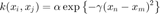
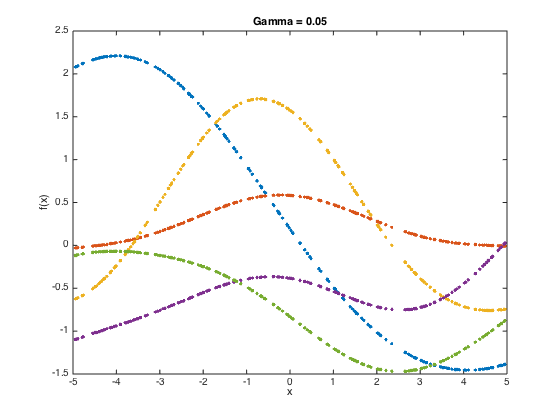
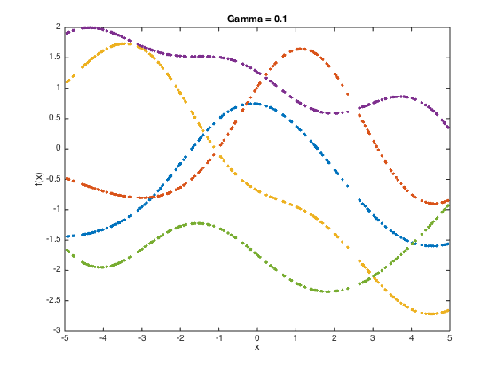
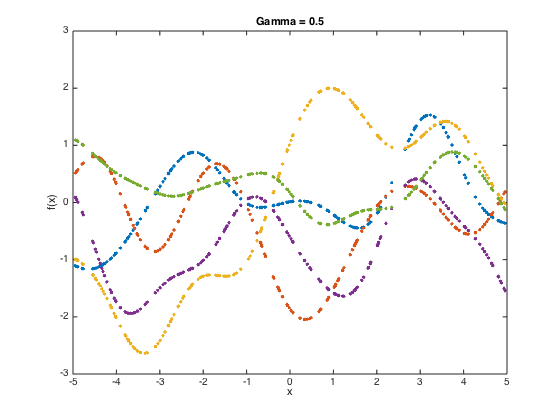

Contents
gpprior.m
Plots realisations from a GP prior using an RBF covariance function
From A First Course in Machine Learning Simon Rogers, August 2016 [simon.rogers@glasgow.ac.uk]
clear all; close all;
Define the x variable
The first step is to define the x values of interest, we'll pick some random ones in the range -5 to 5
x = rand(200,1) * 10 - 5; x = sort(x);
Define the kernel parameters of interest
We are using an RBF covariance function:

gamvals = [0.05,0.1,0.5]; alpha = 1;
Loop over the gamma values
at each stage, compute the covariance matrix and then sample 5 functions from the GP (i.e. 5 realisations from the N dimensional Gaussian with men zero and covariance equal to the covariance matrix.
N = length(x); for gam = gamvals C = zeros(N); for n = 1:N for n2 = 1:N C(n,n2) = alpha*exp(-gam*(x(n)-x(n2))^2); end end % add some jitter for numerical stability C = C + 1e-6*eye(N); f = mvnrnd(repmat(0,N,1),C,5); figure() plot(x,f,'.'); title(sprintf('Gamma = %g',gam)); xlabel('x'); ylabel('f(x)'); drawnow; end  